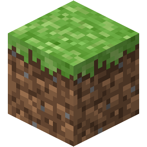

Minecraft foi a minha escola de programação Minecraft was my programming school
Como um jogo "de criança" me ensinou a programar, a falar inglês, a resolver problemas e a cuidar de servidores, e me deu amizades e uma carreira. How a "kids' game" taught me to program, to speak English, to solve problems and to run servers, and gave me friendships and a career.

Onde tudo começou Where it all began
Eu tive acesso a computador, internet e jogos desde muito novo. Nessa foto eu devia ter uns 4 anos, todo sorridente na frente daquele PC branco, sem fazer ideia de que aquela máquina ia definir o rumo da minha vida.
I had access to computers, the internet and games from a very young age. In this photo I must have been about 4, all smiles in front of that white PC, with no idea that machine would shape the course of my life.
Antes de saber o que era programar, eu passava horas no SNES9X, o emulador de Super Nintendo, jogando tudo que aparecia por lá. Muitos jogos não tinham tradução, e foi assim, sem perceber, que o inglês começou a entrar na minha vida.
Long before I knew what programming was, I spent hours on SNES9X, the Super Nintendo emulator, playing everything I could find. Many games had no translation, and that is how English started creeping into my life without me even noticing.
Depois vieram os MMORPGs (Lineage II, Priston Tale, Cabal Online, Tibia, Ragnarok, Trove) e o Counter-Strike, que eu jogo desde o Source até o CS2 de hoje. Cada um deixou um pouco mais de inglês e alguns amigos pelo caminho.
Then came the MMORPGs (Lineage II, Priston Tale, Cabal Online, Tibia, Ragnarok, Trove) and Counter-Strike, which I have played from Source all the way to today's CS2. Each one left me a bit more English and a few friends along the way.
2012: o jogo que mudou o meu rumo 2012: the game that changed my path
Em 2012 fiz uma viagem a São Bernardo do Campo, onde mora a família do meu pai, e vi meu primo Gustavo jogando Minecraft. Foi paixão na hora. Voltei para casa e chorei muito na cabeça do meu pai até ele instalar o jogo no meu PC. Depois de uns dias ele conseguiu: era a famosa versão do AnjoCaido, que muita criança daquela época vai lembrar.
In 2012 I took a trip to São Bernardo do Campo, where my dad's side of the family lives, and saw my cousin Gustavo playing Minecraft. It was love at first sight. Back home, I cried and begged my dad until he installed the game on my PC. A few days later he managed it: it was the famous AnjoCaido version, which plenty of kids from that time will remember.
Arrisco dizer que, se não fosse por esse jogo, talvez eu tivesse tomado outro rumo na vida, e não o de programador.
I'd venture to say that, if it weren't for this game, I might have taken another path in life, and not that of a programmer.
Dos servidores aos plugins From servers to plugins
O Minecraft pode ser visto como um jogo infantil, mas o que me prendeu de verdade foram os servidores da comunidade. Eles são infinitos e únicos: cada um com suas regras, sua economia, seus minigames e sua gente. Primeiro eu quis entender como aquilo funcionava; depois, quis ter o meu.
Minecraft may be seen as a kids' game, but what really hooked me were the community servers. They are endless and unique: each one with its own rules, economy, minigames and people. First I wanted to understand how it all worked; then I wanted one of my own.
Perdi a conta de quantos servidores eu subi pelo Hamachi (quem viveu essa época vai rir). Com uns 14, 15 anos eu já desenvolvia meus primeiros plugins em Java: coisas bobas, mas minhas. Aprendi sozinho, assistindo vídeos no YouTube e garimpando respostas nos fóruns do Bukkit e do Spigot, no Stack Overflow e em tantos outros de que nem lembro mais.
I lost count of how many servers I spun up over Hamachi (anyone who lived through that era will laugh). At around 14 or 15 I was already writing my first Java plugins: silly things, but mine. I taught myself, watching YouTube videos and digging for answers on the Bukkit and Spigot forums, on Stack Overflow and on so many others I can't even remember.
Foi ali que eu fui me descobrindo. E, aos poucos, mais pessoas foram se juntando a essa jornada.
That's where I started discovering who I was. And, little by little, more people joined me on that journey.

A Lykos Province Lykos Province
Dessa turma nasceu a Lykos Province, em 5 de agosto de 2017. Ela cresceu até virar uma rede de verdade: um proxy, um lobby central e vários servidores jogáveis, cada um com o seu modo de jogo (MMORPG, Skyblock, Rankup, Creative, MineZ, Minigames, Survival e Hardcore). O ambiente de teste era o meu próprio desktop, ainda pelo Hamachi; a produção rodava em VPS com o painel Pterodactyl.
That group gave birth to Lykos Province, on August 5, 2017. It grew into a real network: a proxy, a central lobby and several playable servers, each with its own game mode (MMORPG, Skyblock, Rankup, Creative, MineZ, Minigames, Survival and Hardcore). The test environment was my own desktop, still over Hamachi; production ran on VPSs with the Pterodactyl panel.
E não era só jogo, tinha produto. Criamos um sistema de cosméticos compartilhado entre todos os servidores (partículas, tags, pets e visuais de itens), VIPs que valiam num servidor só ou na rede inteira e créditos vendidos na loja do site, que viravam essas vantagens dentro do jogo.
And it wasn't just a game, it was a product. We built a cosmetics system shared across every server (particles, tags, pets and item skins), VIP ranks that worked on a single server or across the whole network, and credits sold in the website store, which turned into those perks in game.
Toda a identidade visual, do brasão ao mascote, foi desenhada pelo Leandro Paiva Cotta, um grande amigo e ilustrador com quem, inclusive, já morei junto em dois momentos diferentes da vida.
The whole visual identity, from the crest to the mascot, was drawn by Leandro Paiva Cotta, a great friend and illustrator, whom I have even lived with at two different times in my life.
Um dos momentos mais marcantes foi quando batemos as primeiras mil pessoas. Na mesma época a gente sonhava alto: tínhamos projetos de servidores de Garry's Mod e de Unturned, que nunca chegaram a sair do papel.
One of the most memorable moments was reaching our first thousand people. Around the same time we were dreaming big: we had plans for Garry's Mod and Unturned servers, which never got off the ground.
Pude realizar o sonho de ter a minha própria comunidade, e dela colhi os maiores frutos: as amizades e a carreira que essa criança interior, cheia de sonhos, construiu.
I got to live the dream of having my own community, and from it I reaped the best fruits: the friendships and the career that this inner child, full of dreams, built.
O que o Minecraft me ensinou What Minecraft taught me
- A programar: Java, plugins e o hábito de procurar a resposta sozinho.
- To program: Java, plugins and the habit of finding answers on my own.
- Inglês: jogando em servidores internacionais e em calls no MSN, no Skype, no TeamSpeak e no Discord.
- English: playing on international servers and in calls on MSN, Skype, TeamSpeak and Discord.
- A resolver problemas: os que apareciam todo dia, um de cada vez.
- To solve problems: the ones that showed up every day, one at a time.
- Redes e infraestrutura: protocolos de rede, servidores, proxies e escalabilidade.
- Networking and infrastructure: network protocols, servers, proxies and scalability.
Eu diria que fiz do Minecraft a minha escola de programação.
I'd say I turned Minecraft into my programming school.

Obrigado, webamigos Thank you, online friends
Tenho um amor enorme por esse jogo e por todos os webamigos que fizeram parte dessa caminhada. São tantos nicks que prefiro abraçar todo mundo de uma vez, com um carinho especial pelo meu primo Douglas Motta (iDougPvP), com quem joguei Minecraft por tantos anos.
I have a huge love for this game and for all the online friends who were part of this journey. There are so many nicknames that I'd rather hug everyone at once, with a special place for my cousin Douglas Motta (iDougPvP), with whom I played Minecraft for so many years.
Hoje eu trabalho com infraestrutura, dados e automação. Mas, olhando para trás, muita coisa do que eu faço começou ali, num servidor de Minecraft rodando pelo Hamachi.
Today I work with infrastructure, data and automation. But, looking back, a lot of what I do started right there, on a Minecraft server running over Hamachi.